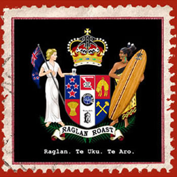
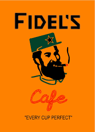
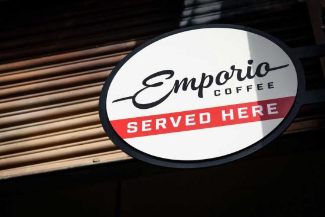
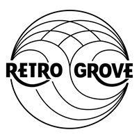

Get Coffee!!

Raglan Roast
40 Abel Smith St, Te Aro, Wellington 6011

Fidels Cafe
234 Cuba St, Te Aro, Wellington 6011
Marthas Pantry
276 Cuba St, Te Aro, Wellington 6011

Your Cafe here
** Cuba St, Te Aro, Wellington 6011

Emporio Coffee
90 Abel Smith St, Te Aro, Wellington 6011
